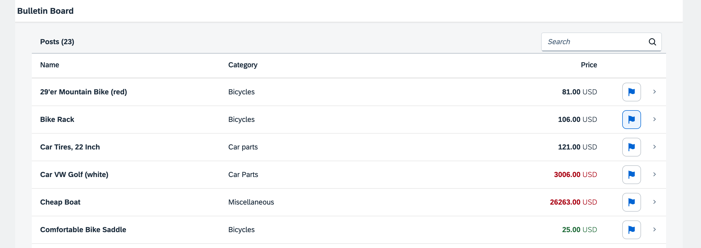

You can view and download all files in the Samples in the Demo Kit at Testing - Step 12.
...
<Table
id="table"
width="auto"
class="sapUiResponsiveMargin"
growing="true"
items="{
path: '/Posts',
sorter: {
path: 'Title',
descending: false
}
}"
busyIndicatorDelay="{worklistView>/tableBusyDelay}"
updateFinished=".onUpdateFinished">
<headerToolbar>
<Toolbar>
<Label id="tableHeader" text="{worklistView>/worklistTableTitle}"/>
<ToolbarSpacer />
<SearchField id="searchField" width="auto" search=".onFilterPosts" />
</Toolbar>
</headerToolbar>
...We add a ToolbarSpacer and a SearchField to the
headerToolbar of our table.
sap.ui.define([ './BaseController', 'sap/ui/model/json/JSONModel', '../model/formatter', '../model/FlaggedType', 'sap/m/library', "sap/ui/model/Filter", "sap/ui/model/FilterOperator" ], function (BaseController, JSONModel, formatter, FlaggedType, mobileLibrary, Filter, FilterOperator) { "use strict"; ... onUpdateFinished: function (oEvent) { // update the worklist's object counter after the table update var sTitle, oTable = oEvent.getSource(), iTotalItems = oEvent.getParameter("total"); // only update the counter if the length is final and // the table is not empty if (iTotalItems && oTable.getBinding("items").isLengthFinal()) { sTitle = this.getResourceBundle().getText("worklistTableTitleCount", [iTotalItems]); } else { sTitle = this.getResourceBundle().getText("worklistTableTitle"); } this.getModel("worklistView").setProperty("/worklistTableTitle", sTitle); }, onFilterPosts: function (oEvent) { // build filter array var aFilter = []; var sQuery = oEvent.getParameter("query"); if (sQuery) { aFilter.push(new Filter("Title", FilterOperator.Contains, sQuery)); } // filter binding var oTable = this.byId("table"); var oBinding = oTable.getBinding("items"); oBinding.filter(aFilter); }, ...
To enable filtering, we extend the controller with a method that applies the search
term entered in the search field to the list binding, similarly as we did for
InvoiceList.controller.js in step 24 of the Walkthrough
tutorial.